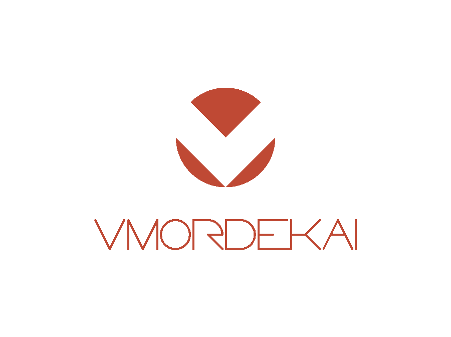
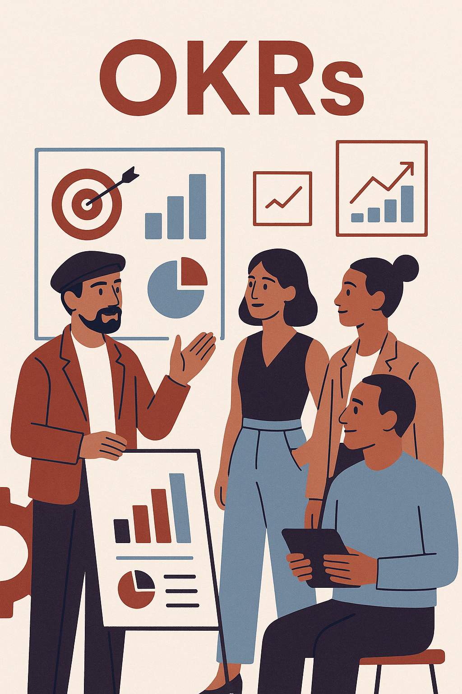

Design e Processos | Gestão e consultorias
Praticidade ao alcance das mãos
SIGA-ME!RETEAR®
Ecossistema modular de frameworks para gestão operacional, rastreabilidade, automação de processos e reorganização produtiva no setor têxtil.

Processo e Design
Pesquisa e Consultoria de produtos, branding e fluxos produtivos aplicados à indústria têxtil.

Design Autoral
Desenvolvimento de bolsas e mochilas com propósito — do conceito à execução.
VMORDEKAI® Briefing e Produtos B2B
Apresentamos soluções de design, gestão e desenvolvimento para empresas que buscam crescimento estruturado.
BRIEFING
Como integrar
a Criatividade aos
seus processos?
A partir da metodologia de DESIGN THINKING
— DE INSIGHTS, DAS IDEIASAO CONCEITO FINAL —
PORTFÓLIO VMORDEKAI®
Estratégia, design e gestão aplicada à moda.
Os projetos desenvolvidos pela VMORDEKAI® nascem da integração entre pesquisa, viabilidade técnica e identidade visual.
Utilizamos metodologias de Design Thinking para mapear necessidades reais, identificar gargalos produtivos e estruturar soluções com foco em eficiência, posicionamento e escalabilidade.
Organizamos os projetos em ciclos objetivos de desenvolvimento, utilizando metodologias ágeis, acompanhamento técnico e indicadores de performance.
Trabalhamos com OKRs e métricas operacionais para garantir clareza estratégica, previsibilidade de execução e evolução contínua das entregas.
Em assessorias contínuas, o modelo de atuação é flexível e adaptável à evolução do negócio, permitindo expansão gradual da operação conforme demanda, capacidade produtiva e metas estabelecidas.

DESIGN, OPERAÇÃO E DESENVOLVIMENTO
Estruturas criativas precisam funcionar no mundo real. Enquanto sua empresa mantém o foco no crescimento e nas vendas.
A VMORDEKAI® atua no desenvolvimento de produtos, organização produtiva e construção de identidade operacional para marcas e empresas do setor têxtil.
Desenvolvemos projetos voltados para private label, design de produto, estruturação técnica, fluxos produtivos e reposicionamento estratégico, sempre alinhados aos objetivos estratégicos de cada cliente.
Integramos gestão e tecnologia para estruturar operações mais eficientes, organizadas e escaláveis.
Aplicamos modelagem operacional, indicadores de desempenho e sistemas de acompanhamento produtivo para ampliar controle, previsibilidade e competitividade.
As soluções são construídas considerando facilities para seu negócio: como viabilidade prática, capacidade real de execução, preço justo e competitivo para um crescimento sustentável.
Acesse nosso portfólio completo e conheça o briefing detalhado do nosso trabalho: Explorar portfólio →
QUEM SOMOS
A VMORDEKAI® surgiu em 2016 com a missão de integração entre design, operação industrial e desenvolvimento técnico aplicado à moda.
Atuamos como um laboratório independente de criação, pesquisa e estruturação estratégica, conectando produto, identidade visual, engenharia produtiva e inteligência operacional.
Como parte do nosso processo de pesquisa e desenvolvimento, a VMORDEKAI® também atua como marca autoral de mochilas e bolsas conceituais, explorando funcionalidade e estética outdoor aplicada ao uso cotidiano. Conheça nosso catálogo!
Nossa atuação combina experiência prática em indústria têxtil, desenvolvimento autoral e implementação de sistemas voltados para produtividade, organização e escalabilidade.
A VMORDEKAI® utiliza o ecossistema RETEAR®, projeto tecnológico de frameworks voltados para rastreabilidade, reorganização produtiva, automação operacional e gestão escalável aplicada ao setor têxtil e industrial.
CNPJ: 26.732.865/0001-36.
Sede: Curitiba – PR.